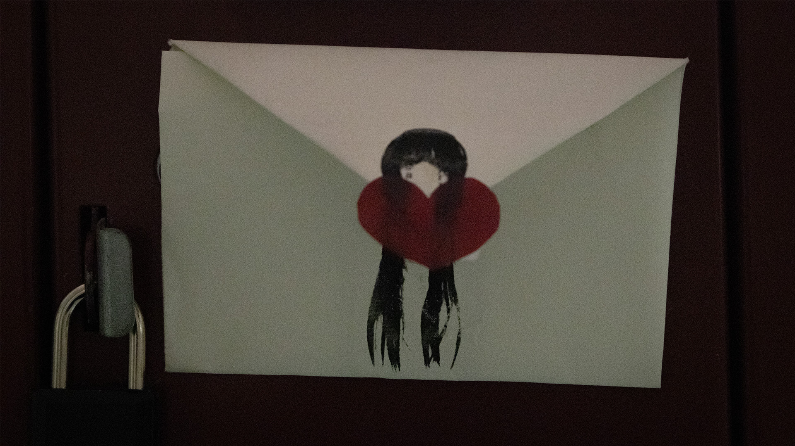

For this one I didn't know what more to do than simply expose it a bit more. However when I looked at the girls face on the envelope it kind of looked like she was crying (or it is like blush but let me be dramatic) almost as if maybe a person she loves hurt her. The lock also felt like it should be included to maybe enforce where the image is in real space (a locker), or to simply make the girl feel like she is trapped there :(. I also played with effects a little bit here adding grain to try to create a nostalgic feeling, don't know if it comes through though.
Here is the fourth image edited for Homework 3:
